玄関
玄関には高い樹が茂っていています。樹に絡まった植物がそれぞれに花を咲かせています。
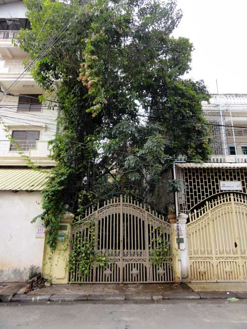
門にはポトスがからみついています。
門を開けると谷間の細長い道です。左右の壁が谷間のようになっています。

昨日の雨でタイルが濡れています。
プロムナード
玄関をぬけるとタイル張りで、建物と建物の谷間を抜けて母屋に続きます。私はプロムナードと呼んでいます。
{kind=link}
右に見えるのが玄関で家の北側にあります。左の車の奥が母屋の入り口です。クリックすると拡大します
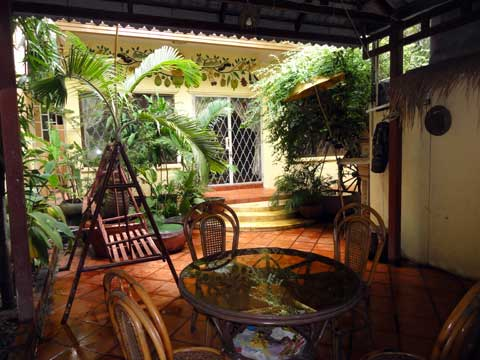
屋根だけの東屋からみた母屋です。
母屋前
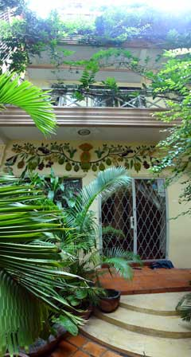
正面が母屋の入り口で、右が離れの台所です。母屋の入り口の上にはカラフルなコテ絵があります。母屋の西側と北側はツル性の樹でおおわれています。
母屋は屋上付の三階建て、屋上には屋根があります。 入り口の周辺には大小の鉢に熱帯魚が飼われています。右には2mほどのジャスミンがあります。
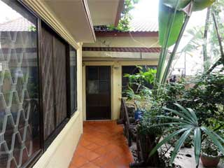
台所の入り口です。
右にオオギヤシが見えます。
{kind=link}
保安
北側にある前の通りから奥まった場所に母屋があり、植物でおおわれ外からは目立たなくなっています。門の上部は鉄条網をかけています。東西と南は他の家に接しています侵入は困難ですし、鉄条網もかけています。
2005年に購入してからこの周辺で浸水したことはありませんが、母屋の一階は地面よりも少し高く作られて万一に備えられています。また消火器は新旧合わせて四つ備えています。
インターネット
インターネットは長距離WiFiにより512k bpsの通信速度で接続（夜間のみの接続で月額$29）していますが、光ファイバーによる接続で最高4M bpsによる通信（月額$476）に変更できます。
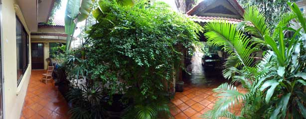
母屋前からのパノラマ写真です。
一階
母屋の一階です。母屋をおおっている樹のおかげで、プノンペンで一番暑い4月5月でも扇風機だけで過ごせます。プノンペンは北回帰線よりも赤道側にあり、この時期の太陽は天頂をこえて北からもさします。上の階には右の階段を利用します。
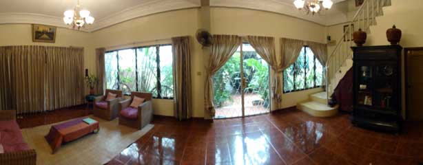
一階のパノラマ写真です。
母屋に入って右奥にはホワイトボードがあり、会議や小さな教室に利用できます。
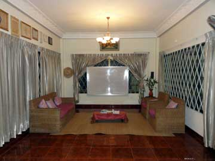
カーテンを開けるとホワイトボードがあります。
二階
母屋の二階です。各階の天井の高さは3mあります。
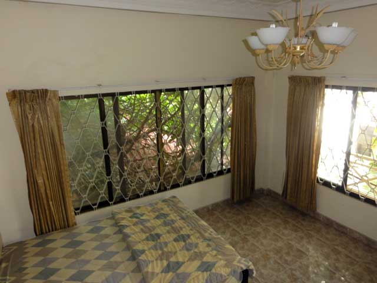
右の明るい窓が北側で、正面の樹でおおわれた窓が西です。
母屋の西は樹でおおわれ、南国の猛烈な西日を遮ります。三階の西は窓のない壁で西日が差し込むことはありませんが、半分ほどまでが樹でおおわれています。
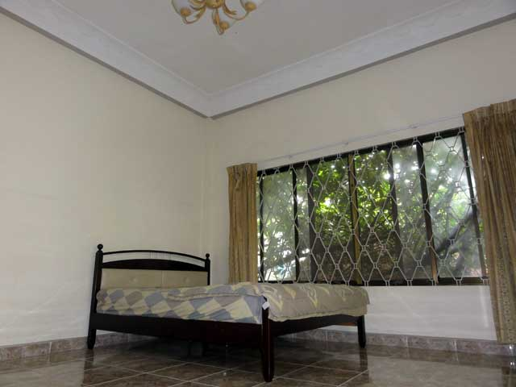
西日は樹で遮られます。
二階のバスルームは東の入り口側、三階は西側にあります。浴槽や洗面台などはともに同じ形のものが置かれています。
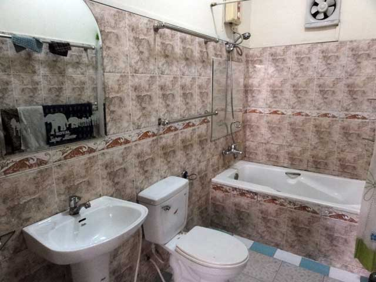
二階のバスルーム
三階
三階の窓は北と南にあり、バスルームは部屋の奥（西）にあります。
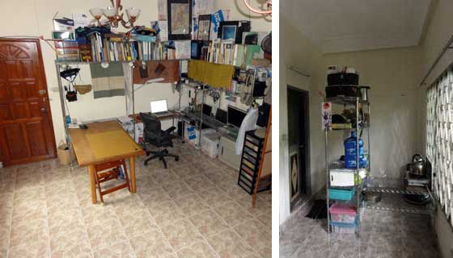
三階の使用例です。金属ラックにコンピュータを数台並べています。
また、部屋の奥にも金属ラックを置いて、簡単な調理ができるようにしています。
屋上
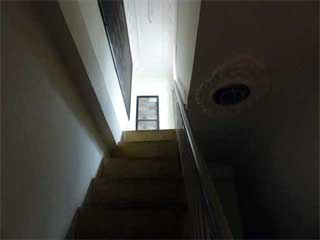
屋上に上がると金網におおわれた部屋にでます。金網は樹が上をおおっています。
屋上には流しがありますので、屋上で食事をしてその場で食器を洗うこともできます。また、屋上にもトイレがあります。トイレの数は離れや屋外にあるものも合わせて6カ所あります。
屋上への階段
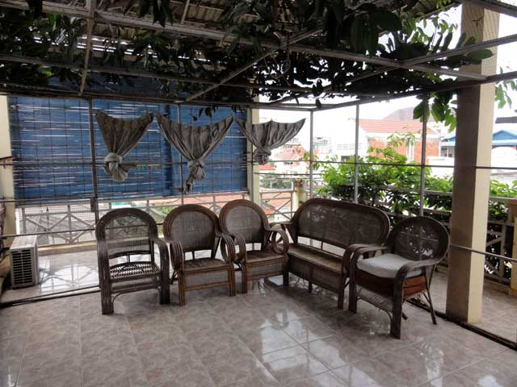
金網の部屋
離れ
離れに台所があります。現在も住んでいるため、雑然としていますが、正面に流しがあります。
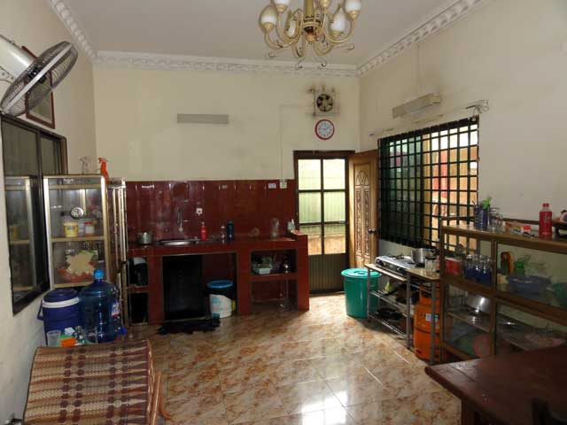
離れは一階建てです。
日本製の冷蔵庫や洗濯機もあります。洗濯機は購入して6年、冷蔵庫は3年です。
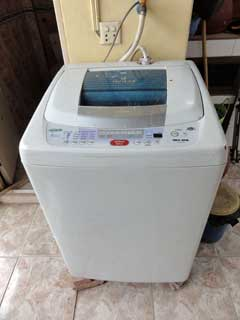 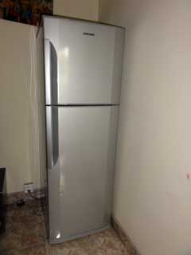
洗濯機と冷蔵庫
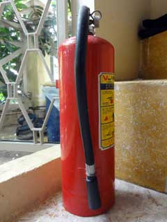
消火器